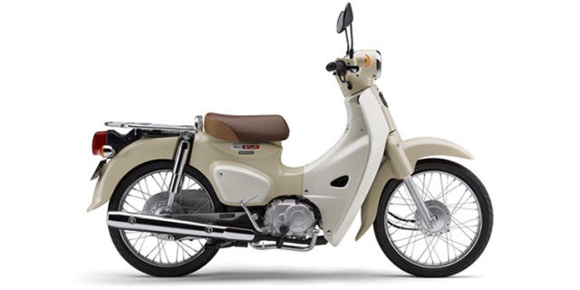

Scooter/moped
Napapagod ka na sa pagbibisikleta, pero mahirap (o mahal) kumuha ng driver’s license? Kuha ka ng scooter (gentsuki) license!
Wala akong scooter license, pero ilang taon na ang nakakalipas ay binigyan ako ng scooter ng kaibigan kong umuwi sa Pilipinas at nalaman ko na kapag may driver’s license ka na (para sa kotse) ay pwede kang sumakay ng scooter nang wala nang scooter license na kailangan.

Honda Super Cub, ang pinakamabentang sasakyang de-motor sa kasaysayan. May 100,000,000 na daw na Honda Super Cub ang nabenta mula ng 1958.
Ano ba yang gentsuki na sinasabi nila sa Japan?
Ang totoong tawag dyan sa Japanese ay Gendouki-tsuki Jitensha, o “motorized bicycle.” Siguro sasabihin mo, “bisikleta pala yan e!” Siguro nga. Pero may motor, at mabilis! Puwede kang umarangkada ng 30kph (maximum na hindi ka huhulihin ng pulis).
Sa ibang bansa, o sa Pilipinas, ito yung tinatawag na scooter o moped, sabi nila. 49cc pababa ang motor. Kung mas malaki pa dyan, kailangan na ng totoong lisensya para sa motorsiklo, na mahirap kunin (at mahal).
Pero sabi nila napakadaling kunin ang scooter license, marami daw kumukuha nito para lang meron silang ID.
Gaano kadaling kumuha ng scooter license?
1 araw lang. Kung masuwerte ka at walang mga problema, kalahating araw lang puwede ka nang humarurot sa mga (makikipot na) kalsada ng Japan!
Magkano ang gagastusin?
Kailangan mong maglabas ng 7,800 yen. 7,800 yen lang! Wala pang isang lapad! Kung lisensya ng kotse ay minimum 300,000 yen ang bayad, kaya sulit na sulit ang 7,800 para may “motor” ka na.
| Para saan | Bayad (yen) |
|---|---|
| Testing fee | 1,650 |
| Scooter training course fee | 4,050 |
| Issuance fee | 2,100 |
| Total | 7,800 |
Ano ang qualification na kailangan?
Una, kailangang marunong kang mag-bisikleta siyempre. Hindi ka pwedeng mag-scooter nang hindi ka marunong mag-bisikleta, obvious naman siguro yan. At kailangan ay may 16 taong gulang ka na. (Sa driver’s license kailangan ay at least 18 years old ka na.)
- Kailangan ay nakakarinig ka ng 90db sa layong 10 meters
- Hindi ka color blind: alam mo ang pagkakaiba sa pula, green at yellow
- Wala kang kapansanan sa katawan
- Dapat at least 0.5 ang bawat isang mata mo
- Kung isa lang ang mata mo, dapat yung nakakakitang mata ay 0.5 at 150-angle ang vision.
Ano ang procedure ng pagkuha nito?
Ihanda mo ang mga kailangan.
- Juuminhyo (sa city hall kinukuha)
- Inkan
- 3cm x 2.4cm na litrato (kinuha sa loob ng 6 buwan). Libre ang palitrato sa testing center pero kung gusto mo ng magandang (o poging) litrato ay ihanda mo na lang ng sarili mo.
- Pera (yung 7,800 yen)
- Ballpen at lapis
- Salamin, kung kailangan
Punta ka sa testing center.
- Sulatan ang application form, bili ka ng revenue stamp (7,800), pila ka sa information.
- Aptitude test (tainga at mata)
- Paper test (30 minutes: 46 na true or false question at 2 situation test (2 points bawat isa). Total 50 points at 45 points ang passing.
- Announcement ng passers. Kung bumagsak ka, pa-schedule ka ulit!
Kung pumasa ka sa paper test, bibigyan ka ng scooter training course. Malapit na! Pagkatapos ng actual course na mga 2 hanggang 3 oras ay manunood ng video. Pagkatapos nito ay may scooter license ka na!
Madali lang, di ba?
Ang totoo ay 50% lang daw ang passing rate ng scooter license test. Hindi naman daw ganon kahirap ang test, pero dahil dumadami daw ang aksidente ng scooter ay naging mas estrikto kesa sa dati. Isa pa daw na dahilan ay may impression ang marami na madali lang ang test kaya pumupunta sa testing center nang hindi nag-aaral.
Karamihan ng tanong ay tungkol sa manners sa pagsakay ng scooter at traffic rules, at hindi ito mga tanong na madaling sagutin nang hindi nag-aaral. Kaya mag-aral!
Nga pala maraming tanong sa Internet na puwede mong pagpraktisan, kagaya nito:
Kung gusto mo naman nang mas malalim na kaalaman tungkol sa batas trapiko ng Japan, kailangan mong basahin ang librong ito: Rules of the Road by Japan Automobile Association
May expiration ba ang scooter license?
Meron. Nakasulat nang malaki sa harap ang expiration ng scooter license mo at kailangang i-renew ito bago lumipas nag expiration date.